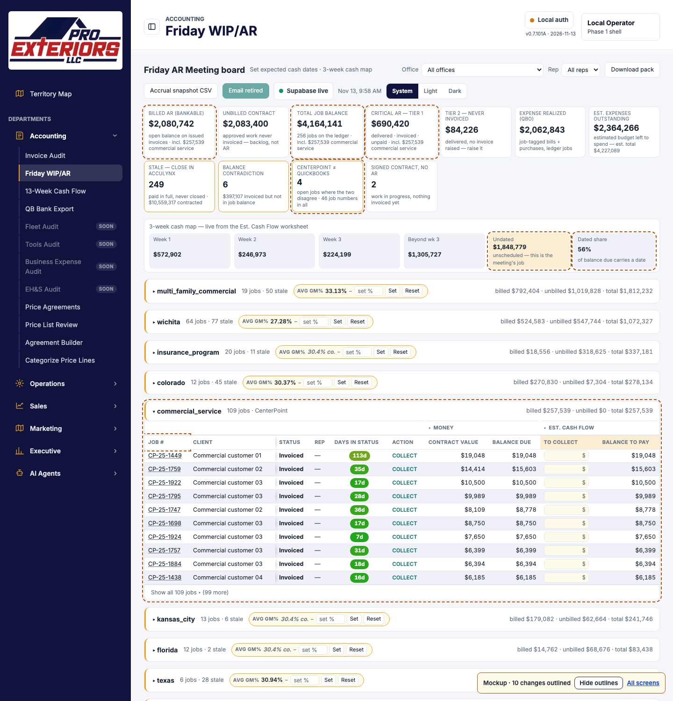
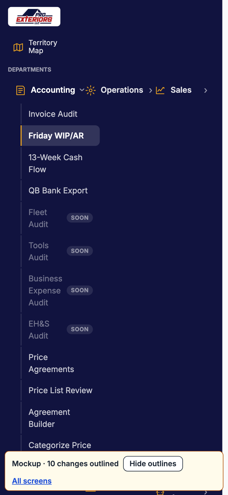
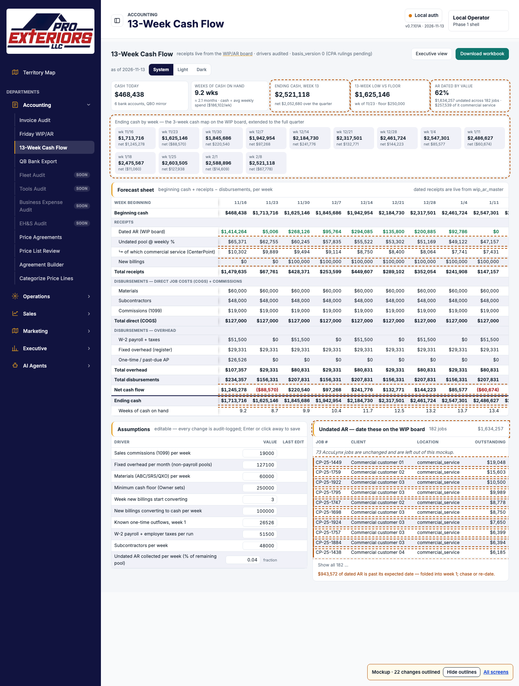
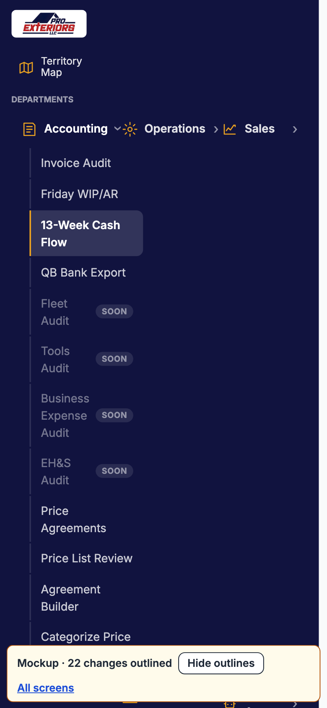
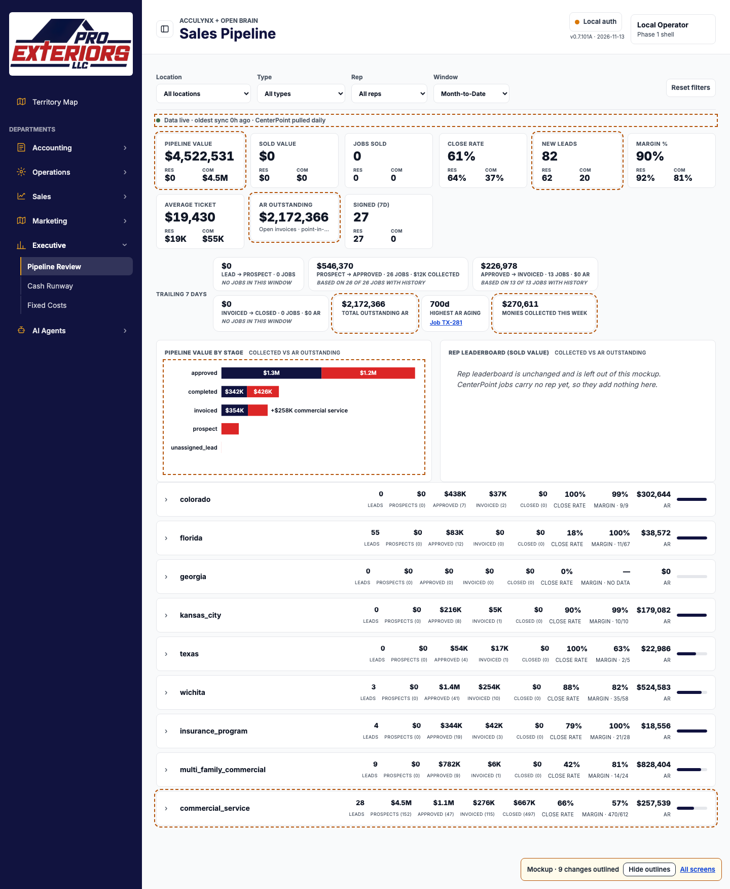
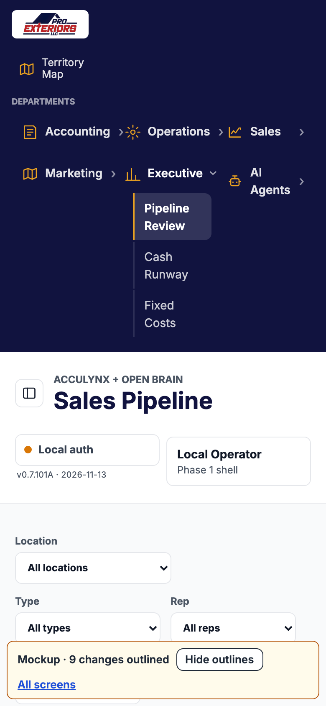

CenterPoint on the Command Center: mockups for sign-off
Commercial, multi-family and service work from CenterPoint appears on three screens that already exist. No screen is added. Each mockup is the real screen, as rendered on 2026-11-13, with only the CenterPoint changes applied and outlined.
AccuLynx job rows and rep lists are left out of these files, and CenterPoint customers are shown as numbered aliases, so no customer or staff name is in them. Every CenterPoint figure is live data.
1. Friday WIP/AR
- A new office group, commercial_service: 109 jobs with an unpaid invoice, in the board's own columns.
- Billed AR, Total job balance and Critical AR include those jobs.
- One new pill: jobs where CenterPoint and QuickBooks disagree.
- The cash map's Undated amount grows until the meeting dates the new jobs.
- The Job # column widens so 10-character job numbers fit.


2. 13-Week Cash Flow
- The undated pool includes the CenterPoint receivables, with their share on its own line.
- Receipts, net cash flow and ending cash are recalculated for all 13 weeks.
- The undated list at the bottom includes the CenterPoint jobs.


3. Sales Pipeline
- A new location row, commercial_service, with leads, prospects, approved, invoiced and closed.
- Pipeline value, New leads and AR outstanding include CenterPoint.
- The stage chart's Invoiced bar gains the open CenterPoint invoices.


Decisions needed from Chris
- Stage mapping on the pipeline. New Lead → Leads; Quoted and Pending → Prospects; Sold and open tickets → Approved; Invoiced → Invoiced; Closed Out → Closed.
- Critical AR. Does every unpaid CenterPoint invoice count as Tier 1?
- Type filter. Is every CenterPoint job "Commercial"?
- Group name.
commercial_servicefollows the other office keys. Say if it should read differently. - Meeting entries. Expected dates and notes for a CenterPoint job have nowhere to be saved yet. The mockup shows them as editable, which is the target; it needs new storage first.
The other two sign-off documents
Brand-alignment auditGap analysis
Not covered yet: dark mode, and the job list inside an expanded pipeline row.